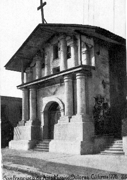

I turn and walk away
then I come round again
It looks as though tomorrow
I'll do very much the same
I must turn down your offer
but I'd like to ask a break
You know I'm ready to give everything
for anything I take
Someone called my name
You know, I turned around to see
It was midnight in the Mission
and the bells were not for me
Come again
Walking along in the Mission in the rain
Come again
Walking along in the Mission in the rain
Ten years ago I walked this street
my dreams were ridin tall
Tonight I would be thankful
Lord, for any dream at all
Some folks would be happy
just to have one dream come true
but everything you gather
is just more that you can lose
Come again
Walking along in the Mission in the rain
Come again
Walking along in the Mission in the rain
All the things I planned to do
I only did half way
Tomorrow will be Sunday
born of rainy Saturday
There's some satisfaction
in the San Francisco rain
No matter what comes down
the Mission always looks the same
Come again
Walking along in the Mission in the rain
Come again
Walking along in the Mission in the rain
Performed for a very brief period in 1976 (five performances) by the Dead, then reserved for the Jerry Garcia Band.

(Photograph from a postcard published by the O. Newman Company ca. 1912)The Mission District in San Francisco, so named because it surrounds the Spanish Mission Dolores. Mission Dolores is located on Dolores Street between 16th and 17th streets. According to the WPA Guide to California:
"...founded in 1776 by Father Junipero Serra. First named in honor of St. Francis of Assisi, common usage soon gave it the name of Mision de los Dolores from a nearby marsh known as Laguna de Nuestra Senora de los Dolores (Lagoon of Our Lady of Sorrows). The first mass was sung five days before the Declaration of Independence was signed at Philadelphia. The adobe building was begun in 1782 and is an unusual example of Spanish mission architecture.
"...Behind the mission in the high-walled, flower-covered graveyard are buried many of the famous dead of San Francisco's early days, ... The graves of Casey and Cora, hanged by the vigilantes in 1856, are a reminder of lawless days. Many of the graves are unmarked." --p. 292.
Garcia, raised in San Francisco, was familiar with the area, which is largely Hispanic.
In an interview by Blair Jackson in Golden Road, Spring 1991,
the following exchange took place:
"[Jackson]: You've described that song as being essentially from your point of view.
Garcia: Right, it's autobiographical, though I didn't write it."-- p. 36
And Hunter, in an interview in Relix:
"Well yea. I used to live over in the Mission when I was just starting to write for the Dead full time. I wasn't living at 710, I was living over on 17th & Mission, and that was very much a portrait of that time: looking backward at ten years." (v. 5, #2, p. 25)
From: John [mailto:FriscoJohn@comcast.net]
Sent: Saturday, January 25, 2003 9:31 AM
Subject: Mission In the Rain
David,
Many thanks for your work on the Dead...."Annotated" is a resource I've used time and time again to clarify lyrics.
I've been thinking a lot lately about Mission in the Rain. I believe the word "bell" should probably be spelled "belle"....or at least, is a very deliberate pun.
The song, of course, is about a guy walking through the San Francisco Mission district at midnight in the rain. The main thing you will find at midnight around 17th and Mission (where Hunter used to live) is hookers, and this has been true at least back to the early Sixties. (For street hookers, tourists in SF go to the Tenderloin, near the big hotels. The locals have always come to the Mission). The main hooker area for many years in the Mission has been 16th to 18th on Mission, and 16th to 18th on the parallel alley, Capp. **
There are no Mission Bells at midnight in the Mission....but there are many Mission "Belles." Other things which point to this in the song:
- "I must turn down your offer but I'd like to ask a break...." (He's broke, or doesn't have enough money?)
- "Someone called my name, you know, I turned around to see...." (A girl he'd been with before?)
- Other lyrics also seem to fit.... (There's some satisfaction in the San Francisco Rain...) etc.
Warm Regards,
John B. Andrews
** this is only slightly less true today....the influx of yuppies has resulted in a bit of a crackdown....but the girls are still there.